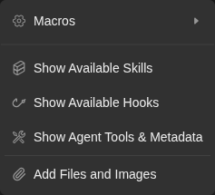
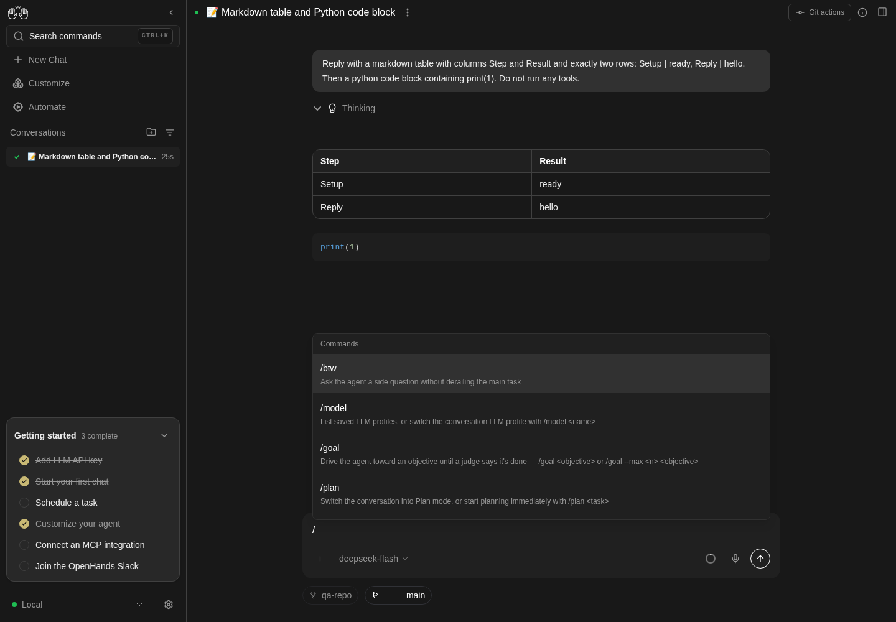

How to get to it
- Home page composer (
/) and the composer of any conversation (/conversations/<id>, reached from the sidebar conversation list or by URL). +(More actions,chat-plus-button) inside the composer opens the tools menu; its last item Add Files and Images opens the native file picker (upload-image-input).- Model pill (
chat-input-llm-profile) next to+; at 320 px it moves into the vertical-dots More input actions button. On the home page it names the default profile (the one Settings → LLM marks as default); in a conversation it names the profile that conversation runs on. - Right side of the composer: status text with Stop/Play, context ring (
context-window-meter), mic (chat-dictation-button), Send (submit-button). - Typing
/at the start of a word opens the slash menu (slash-command-menu);/planand/codeare the only mode switches on the local backend (the Code/Plan pill is Cloud only). - Keyboard: Enter sends, Shift+Enter newline, Ctrl+Enter / Cmd+Enter builds a plan; Escape closes the slash menu.
Before you start
Start with the common launch and health checks, then follow this family’s preconditions in order. Recipes share the fixtures and state named below.
Preconditions:
- Baseline state (launched, doctored,
onboard --skipdone) andcontrol-openhands llm preset deepseek(profilesdeepseek-flashactive anddeepseek-pro). Every recipe exceptF05.agent-profile-switch, the home draft,F05.image-only-sendandF05.profile-identityneeds a model. Without a DeepSeek key,QA_DUMMY_KEY=qa control-openhands llm set --profile qa-zeta --model openai/gpt-4o --api-key-env QA_DUMMY_KEY --no-validatestands in for the active profile: conversations can still be created (the agent errors at once), which is all those two bullets need, and every bullet that reads a reply isblocked. F05.profile-identityneeds two profiles on one model: its bullet createsqa-alphaandqa-zetawithllm set --no-validateright before it and deletes them afterwards.- A conversation to type into:
control-openhands conversation start --prompt "Reply with only: ok" --wait --timeout 240printsid(<id>below) and leaves the browser on/conversations/<id>. - Attachment fixtures:
control-openhands fixture image --name qa-imageandcontrol-openhands fixture file --name qa-note.txt --content "QA attachment 7731"(both land in$OH_VERIFY_RUN/evidence/_fixtures/). - Desktop viewport unless a bullet says otherwise. Microphone dictation is blocked in the sandbox browser (no microphone);
+> Git tools needs a conversation on a git workspace (not driven here).
Behavior inventory
25 stable behavior IDs and their expected behavior
F05.send-messageSend is disabled while the field is empty; Shift+Enter inserts a newline; Enter sends, clears the field and the message persists after reload. Read recipe ↓F05.draft-persistenceunsent text is restored per conversation (after navigation and reload) and on the home composer. Read recipe ↓F05.composer-resizethe field grows with its content and shrinks when cleared; a top-edge grip lets the user drag the height. Read recipe ↓F05.agent-profile-switchbefore a conversation starts,+> Switch agent profile lists agent profiles and links to Manage agent profiles; it is absent in a started conversation. Read recipe ↓F05.attach-filespicked files show as chips and images as thumbnails (with an Upload-as-file toggle), each removable; sent files land in the workspace and are named in the message. Read recipe ↓F05.attach-size-limita file over 3 MB, or a selection over 3 MB in total, is refused with an error toast. Read recipe ↓F05.image-only-sendan attached image alone, with an empty field, enables Send; the sent user message shows the thumbnail and carries the picture as an embedded data URL. Read recipe ↓F05.pastepasted clipboard text is inserted as plain text; pasted images and dropped files attach. Read recipe ↓F05.dictationthe mic button dictates into the composer; without a microphone it toasts a failure and resets. Read recipe ↓F05.llm-profile-pickerthe model pill switches the running conversation's LLM profile; the next reply uses the new model. Read recipe ↓F05.profile-identitythe pill names the profile the conversation was started with, also after a reload and when another profile uses the same model; changing the default profile in Settings changes the home pill, not an existing conversation's. Read recipe ↓F05.context-window-meterthe ring shows context use; its popover opens the Usage tab and compacts the context. Read recipe ↓F05.stop-resumeStop pauses a running agent (statusStopped, Play button); Play resumes it. Read recipe ↓F05.queued-messagea follow-up typed while the agent runs is accepted and answered. Read recipe ↓F05.slash-model/modellists saved profiles;/model <name>switches profile. Read recipe ↓F05.slash-btw/btw <question>answers a side question in a dismissible card without adding to the main stream; a bare/btwtoasts that a question is needed. Read recipe ↓F05.slash-goal/goal [--max N] <objective>runs a judged goal loop with a status banner, Stop and Resume; only the newest goal status offers Resume. Read recipe ↓F05.slash-plan-code/planswitches to plan mode (a planner sub-conversation),/codeswitches back. Read recipe ↓F05.slash-plan-code-task/code <task>switches to code mode and sends<task>to the code agent at once;/plan <task>switches to plan mode and sends<task>to the existing planner. Read recipe ↓F05.plan-previewthe planner's Plan.md card shows the plan with Read more, View (Planner tab) and Build. Read recipe ↓F05.build-plan-shortcutCtrl/Cmd+Enter in plan mode builds the plan with the code agent. Read recipe ↓F05.phonethe composer fits a 390 px viewport with every control inline. Read recipe ↓
Readable recipes
Read each script from top to bottom. Code is copied from the map; prose gives the action, expected observation, and conditions. <id>, <run> and similar placeholders stand for values from your own run. Short forms such as browser count continue the same control-openhands invocation; they are kept as documented.
Expected observations describe the recipe’s contract. Captures below selected recipes show representative real states from this snapshot; they do not mark every mapped behavior as passed. Follow cleanup before moving to another family.
No recipes match. Try another word or a behavior ID.
Type and send #
- NoteOn
/conversations/<id>run - Check
control-openhands browser attr 'testid=submit-button' aria-label(
Send message), - Check
control-openhands browser enabled 'testid=submit-button'(
false), - Do
control-openhands browser type 'testid=chat-input' 'Reply with only:' - Check
control-openhands browser enabled 'testid=submit-button'(
true), - Do
control-openhands browser press Shift+Enter - Do
control-openhands browser type 'testid=chat-input' 'ok2' - Do
control-openhands browser eval "document.querySelector('[data-testid=chat-input]').innerText" - Note:
Reply with only:\nok2. - Do
control-openhands browser press Enter --selector 'testid=chat-input' - Notethe field is empty and
- Check
control-openhands browser count 'testid=stop-button'is
1while the agent runs. - Wait
control-openhands conversation wait <id> --fresh --timeout 180(a fast model can finish before a separate
--until runningwait starts, which then times out onfinished), - Do
control-openhands browser reload - Check
control-openhands browser count 'testid=user-message >> has-text=ok2' - Note:
1; - Check
control-openhands browser text 'testid=agent-message >> nth=-1'is
ok2.
Draft survives navigation #
- Check
control-openhands browser type 'testid=chat-input' 'QA draft text' - Noteand wait out the 500 ms save:
- Do
control-openhands browser eval "new Promise(r=>setTimeout(()=>r(JSON.parse(localStorage.getItem('conversation-state-<id>')).draftMessage),1500))"returns
QA draft text. - Check
control-openhands browser click 'testid=backend-selector-settings-link' --expect-url settings - Do
control-openhands browser back - Noteand the
innerTexteval above:QA draft text. - Do
control-openhands browser reload - Noterestores it again.
- NoteClear with
- Do
control-openhands browser fill 'testid=chat-input' '' - Noteand wait a second before navigating.
Home draft #
- Do
control-openhands browser goto / - Do
control-openhands browser type 'testid=chat-input' 'QA home draft' - Do
control-openhands browser goto /settings/secrets - Do
control-openhands browser goto / - Notethen the
innerTexteval:QA home draft; - Do
control-openhands browser storage --sessionlists
oh:home-prompt-draft. - NoteClear with
- Do
control-openhands browser fill 'testid=chat-input' ''
Auto-resize #
- NoteOn
/conversations/<id>(control-openhands browser goto /conversations/<id>; Home draft left/) typeline, then eight times - Do
control-openhands browser press Shift+Enter - Do
control-openhands browser type 'testid=chat-input' 'lineN'(
line2…line9): - Check
control-openhands browser bbox 'testid=chat-input' - Notegrows by 20 px per line, from
height20to180; after - Do
control-openhands browser fill 'testid=chat-input' '' - Noteit is
20. - Check
control-openhands browser count '#resize-grip'is
1. - Do
control-openhands browser drag '#resize-grip' --by 0,-200 - Notemakes the empty field
220high and - Do
control-openhands browser drag '#resize-grip' --by 0,150 - Notebrings it to
70; after - Do
control-openhands browser reload - Noteit is
20again (the dragged height is not kept).
Tools menu and macros #
- NoteOn
/conversations/<id>run - Do
control-openhands browser click 'testid=chat-plus-button' - Check
control-openhands browser testids 'testid=tools-context-menu' - Note:
macros-button,show-skills-button,show-hooks-button,show-agent-tools-button,add-files-and-images-button(nogit-tools-buttonoutside a repository). - Do
control-openhands browser hover 'testid=macros-button'shows
macros-submenuwithincrease-test-coverage-button,fix-readme-button,auto-merge-prs-button,clean-dependencies-button. - Do
control-openhands browser click 'testid=fix-readme-button' - Notecloses the menu and fills the composer with
Please look at the README and make the following improvements…; thetestid=user-messagecount is unchanged. - NoteClear with
- Do
control-openhands browser fill 'testid=chat-input' '' - NoteOpen the menu again and
- Do
control-openhands browser press Escape - Note:
browser count 'testid=tools-context-menu'is0and - Do
control-openhands browser eval "document.activeElement.dataset.testid"is
chat-plus-button.

Composer tools menu offers Macros, Skills, Hooks, Agent tools and Add files and images.
Representative documentation capture, not a complete run of this recipe or family. Captured on an isolated local backend at desktop viewport using the current main checkout.
How this screenshot was taken
canvas: 1.26.0 · agent server: 1.53.0 · sdk: 1.53.0 · automation: 1.19.0
OH_VERIFY_RUN="$OH_VERIFY_RUN" control-openhands browser goto /conversations/<conversation-id>
OH_VERIFY_RUN="$OH_VERIFY_RUN" control-openhands browser click testid=chat-plus-button
OH_VERIFY_RUN="$OH_VERIFY_RUN" control-openhands browser snapshot testid=tools-context-menu
OH_VERIFY_RUN="$OH_VERIFY_RUN" control-openhands browser screenshot testid=tools-context-menu --feature F05.plus-menu --name composer-tools-menuShow dialogs #
- NoteFor each of
show-skills-button,show-hooks-button,show-agent-tools-button: - Do
control-openhands browser click 'testid=chat-plus-button' - Check
control-openhands browser click 'testid=show-hooks-button'(etc.),
- Check
control-openhands browser text 'role=dialog'(starts
Available Skills,Available Hooks,Agent Tools & Metadata), then - Do
control-openhands browser press Escape - Check
control-openhands browser count 'role=dialog' - Note:
0.
Agent profile before start #
- Do
control-openhands browser goto / - Do
control-openhands browser click 'testid=chat-plus-button' - Do
control-openhands browser hover 'testid=switch-agent-profile-button' - Check
control-openhands browser text 'testid=agent-profile-submenu' - Note:
AVAILABLE PROFILES,default(checked;chat-input-agent-profile-option-default),Manage agent profiles. - Do
control-openhands browser click 'testid=agent-profile-submenu >> text=Manage agent profiles' --expect-url 'settings/agents' - Notelands on
/settings/agents. - NoteIn a started conversation (
control-openhands browser goto /conversations/<id>) - Do
control-openhands browser click 'testid=chat-plus-button' - Check
control-openhands browser count 'testid=switch-agent-profile-button'is
0.
Attach a file and an image #
- NoteOn
/conversations/<id>run - Do
control-openhands browser upload 'testid=upload-image-input' "$OH_VERIFY_RUN/evidence/_fixtures/qa-image.png" "$OH_VERIFY_RUN/evidence/_fixtures/qa-note.txt" - Do
control-openhands browser screenshot 'testid=interactive-chat-box' --feature F05.attach-files --name attached - Note: a
qa-note.txt TXTchip and a thumbnail. - Check
control-openhands browser count 'testid=interactive-chat-box >> alt=qa-image.png'is
1. - Do
control-openhands browser click 'role=button[name="Upload as file"]' - Noteturns the image toggle into
Do not upload as file(control-openhands browser attr 'role=button[name="Do not upload as file"]' aria-pressedistrue); click it again to restore. - ExpectThe remove buttons are named:
- Check
control-openhands browser snapshot 'testid=interactive-chat-box'lists
button "Remove qa-note.txt"andbutton "Remove image". - NoteRemove the image with
- Do
control-openhands browser click 'testid=interactive-chat-box >> role=button[name="Remove image"]' - Notethe
alt=qa-image.pngcount is0. - Do
control-openhands browser type 'testid=chat-input' 'Reply with only the content of the attached file.' - Do
control-openhands browser press Enter --selector 'testid=chat-input' - Notewait as in Type and send, and
- Check
control-openhands browser text 'testid=user-message >> nth=-1' - Note: it ends
NEW FILES ADDED: qa-note.txt. - Check
control-openhands conversation events <id> --kinds MessageEvent --last 3shows the reply
QA attachment 7731, andqa-note.txtsits in the conversationworkspaceprinted by - Check
control-openhands conversation status <id>
Size limit #
- NoteArrange
head -c 4194304 /dev/zero > "$OH_VERIFY_RUN/evidence/_fixtures/qa-big.bin"(andqa-two-a.bin,qa-two-b.binwithhead -c 2097152). - Do
control-openhands browser upload 'testid=upload-image-input' "$OH_VERIFY_RUN/evidence/_fixtures/qa-big.bin" - Check
control-openhands browser toasts - Note:
Error: Files exceeding 3MB are not allowed: qa-big.bin. - NoteUploading
qa-two-a.binandqa-two-b.bintogether toastsError: Total file size would be 4.0MB, exceeding the 3MB limit. Please select fewer or smaller files. - Check
control-openhands browser count 'testid=interactive-chat-box >> text=qa-big.bin'is
0.
Image alone #
- NoteFrom the home composer:
- Do
control-openhands browser goto / - Check
control-openhands browser enabled 'testid=submit-button'(
false, empty field), - Do
control-openhands browser click 'testid=chat-plus-button' - Do
control-openhands browser upload-via 'testid=add-files-and-images-button' "$OH_VERIFY_RUN/evidence/_fixtures/qa-image.png" - Check
control-openhands browser count 'testid=home-chat-launcher >> alt=qa-image.png'(
1) and - Check
control-openhands browser enabled 'testid=submit-button' - Note:
truewhile - Do
control-openhands browser eval "document.querySelector('[data-testid=chat-input]').innerText"is still empty (
control-openhands browser screenshot 'testid=home-chat-launcher' --feature F05.image-only-send --name image-alone-send-enabled). - Check
control-openhands browser click 'testid=submit-button' --expect-url '/conversations/' - Noteand read
<image-id>from - Check
control-openhands browser url - NoteAfter
- Wait
control-openhands browser wait 'testid=user-message' - Wait
control-openhands browser wait 'testid=chat-message-sending' --state detached --timeout 5000(the pending bubble carries
testid=user-messagetoo, so wait for itsSending...to go, not only for a bubble; the wait returns"state": "detached"at once when the indicator has already gone, the usual case on a local stack), - Check
control-openhands browser count 'testid=user-message >> testid=image-preview'is
1, and - Check
control-openhands browser count 'testid=chat-message-sending' - Check
control-openhands browser count 'testid=chat-message-retry'are
0. - NoteServer side,
- Check
control-openhands conversation events <image-id> --kinds MessageEvent --grep 'data:image/png;base64' - Notematches the one user row (
count1; itstextis a blank" ", the row carriesimages: 1, and the excerpt shows the"type":"image"block withimage_urls), and - Check
control-openhands conversation events <image-id> --kinds MessageEvent(default
--last) lists the same row withimages: 1and no excerpt.--kindsfilters before--lastcounts, so--kinds MessageEvent --last 1is that same row. - NoteTo check that the model is handed the picture, send the image from Home together with
Which two colours are the bars in this image? Answer with the colour names only. Do not run any tools.and read - Check
control-openhands conversation events <id> --kinds MessageEvent - NoteExpect
orangeandbluein the agent row and--kinds ActionEventcount0(fixture imagedraws those bars). - NoteKnown failure (reproduced 2026-10-08, agent-server 1.53.0, the pinned version): on a
deepseek/*profile the user row still carriesimages: 1, but the agent answers that no image was attached. - ExpectThe model gets text only.
- ExpectThe cause is in the SDK, not Canvas: 1.53.0 string-serializes every model id containing
deepseek, which drops image parts. - NoteOpenHands/software-agent-sdk#5460 and #5467 fixed it on 2026-10-08, after the 1.53.0 release.
- NoteOn a stack launched with
--sdk-path <software-agent-sdk main>the same send answersBlue and orange.with no tool call. - ExpectAn image-only send there reaches the model too: its first reasoning describes four blue and orange stripes.
- NoteOn an affected stack, the image-only send leaves the model with an empty task, and deepseek-flash then explores the disk (see Gotchas).
- NoteReturn with
- Do
control-openhands browser goto /conversations/<id>
Paste text #
- Check
control-openhands browser type 'testid=chat-input' 'QA paste text' - Do
control-openhands browser press Control+a - Do
control-openhands browser press Control+c - Do
control-openhands browser press Delete - Do
control-openhands browser press Control+v - Do
control-openhands browser eval "document.querySelector('[data-testid=chat-input]').innerHTML" - Note:
QA paste text, no markup. - NoteOn a cleared field
- Do
control-openhands browser paste 'testid=chat-input' --file "$OH_VERIFY_RUN/evidence/_fixtures/qa-image.png" - Noteattaches the image (
control-openhands browser count 'testid=interactive-chat-box >> alt=qa-image.png'is1, with anUpload as filetoggle) and - Check
control-openhands browser paste 'testid=chat-input' --text 'QA pasted plain' - Noteinserts plain text (
innerHTMLisQA pasted plain). - Do
control-openhands browser drop-files 'testid=chat-input' "$OH_VERIFY_RUN/evidence/_fixtures/qa-note.txt" --stage over - Notemakes
- Check
control-openhands browser text 'testid=interactive-chat-box' - Notestart
Drop your files here; the same command without--stagedrops it: aqa-note.txtTXTchip appears. - NoteRemove the chip with
- Do
control-openhands browser click 'testid=interactive-chat-box >> role=button[name="Remove qa-note.txt"]' - Noteand the image as in Attach; clear the field.
Dictation failure #
- Check
control-openhands browser click 'testid=chat-dictation-button' --observe '[role=status]' --observe-ms 3000 - Note: the observed toasts include
Dictation failed. Check microphone access and your voice input settings.and - Check
control-openhands browser attr 'testid=chat-dictation-button' aria-labelis back to
Start dictation. - NoteReal dictation is blocked without a microphone.
Switch LLM profile #
- Do
control-openhands browser click 'testid=chat-input-llm-profile' - Check
control-openhands browser text 'testid=chat-input-llm-profile-popover' - Note:
AVAILABLE PROFILES,deepseek-flash/deepseek/deepseek-flash,deepseek-pro/deepseek/deepseek-v4-pro,LLM Profiles. - Do
control-openhands browser click 'testid=chat-input-llm-profile-option-deepseek-pro' - Wait
control-openhands browser wait-text 'Switched to profile' --timeout 15000 - Check
control-openhands browser text 'testid=chat-input-llm-profile'(
deepseek-pro) and - Check
control-openhands conversation status <id>(
modelisdeepseek/deepseek-v4-pro). - NoteSend
Reply with only: pro-okas in Type and send; the reply ispro-ok. - NoteAfter
- Do
control-openhands browser reload - Notethe pill still reads
deepseek-pro. - NoteSwitch back with
- Do
control-openhands browser click 'testid=chat-input-llm-profile' - Do
control-openhands browser click 'testid=chat-input-llm-profile-option-deepseek-flash'
Profile identity #
- NoteArrange two profiles on one model right before this bullet:
QA_DUMMY_KEY=qa control-openhands llm set --profile qa-alpha --model openai/gpt-4o --api-key-env QA_DUMMY_KEY --no-validate --no-activateandQA_DUMMY_KEY=qa control-openhands llm set --profile qa-zeta --model openai/gpt-4o --api-key-env QA_DUMMY_KEY --no-validate(qa-zetabecomes the default:control-openhands api GET /api/profiles --pick active_profileisqa-zeta). - Do
control-openhands conversation start --prompt "Reply with only: identity-ok"(no
--wait; with the dummy key the agent errors at once, which does not matter here) and note itsidas<zeta-id>. - Wait
control-openhands browser wait 'testid=chat-input-llm-profile' - Check
control-openhands browser text 'testid=chat-input-llm-profile'is
qa-zeta, not the alphabetically first profile on that model. - Do
control-openhands browser reload - Notethe wait and the text again: still
qa-zeta. - NoteWith a DeepSeek key, arrange both profiles on
deepseek/deepseek-flashwith--api-key-env DEEPSEEK_API_KEYand without--no-validate, and start with--prompt "Reply with only: identity-ok. Do not run any tools." --wait --timeout 180. - NoteThen the reply also survives the reload:
- Check
control-openhands browser text 'testid=agent-message >> nth=-1'is
identity-okbefore and after it (driven 2026-10-08). - ExpectThe
defaultagent profile still namesdeepseek-flashhere, so the launch runs the pill's profile through agent settings (F13.llm-pill-precedence). - ExpectThe name is stamped on the conversation in this browser:
- Do
control-openhands browser eval "JSON.parse(localStorage.getItem('openhands-agent-server-conversation-metadata'))['<zeta-id>'].active_profile"is
qa-zeta. - NoteChange the default in Settings:
- Do
control-openhands browser goto /settings/llm - Wait
control-openhands browser wait 'testid=add-llm-profile' - Do
control-openhands browser click '[data-testid=profile-row]:has([title="qa-alpha"]) >> testid=profile-menu-trigger' - Do
control-openhands browser click 'testid=profile-actions-menu >> testid=profile-set-active' - Wait
control-openhands browser wait-text 'Switched to profile "qa-alpha"'(
control-openhands api GET /api/profiles --pick active_profileisqa-alpha). - ExpectThe home pill follows the default:
- Do
control-openhands browser goto / - Notethe wait, and
- Check
control-openhands browser text 'testid=chat-input-llm-profile'is
qa-alpha; the started conversation keeps its own: - Do
control-openhands browser goto /conversations/<zeta-id> - Notethe wait, and the text is
qa-zeta(control-openhands browser screenshot 'testid=interactive-chat-box' --feature F05.profile-identity --name conversation-keeps-qa-zeta). - NoteRestore: make
deepseek-flashthe default again the same way (its row'sprofile-menu-trigger, thenprofile-set-active), then - Arrange
control-openhands api DELETE /api/profiles/qa-alpha --write - Arrange
control-openhands api DELETE /api/profiles/qa-zeta --write(arrange, not proof) so
/modelbelow still counts two profiles. - NoteIn a model-free run make
qa-zetathe default instead and delete onlyqa-alpha. - NoteReturn with
- Do
control-openhands browser goto /conversations/<id>
Overflow menu #
- Do
control-openhands browser viewport narrow - Check
control-openhands browser snapshot 'testid=interactive-chat-box' - Note: the model pill is gone and
button "More input actions"appears (atphoneand350x800the pill stays inline). - Do
control-openhands browser click 'role=button[name="More input actions"]' --observe '[data-testid=chat-input-overflow-menu]' --observe-ms 1000 - Note:
observedgoes from<absent>toModel(the menu appears in the observed sequence; its delay varies from run to run, so do not assert a time) and has no later<absent>. - Check
control-openhands browser count 'testid=chat-input-overflow-menu'is
1and - Check
control-openhands browser attr 'role=button[name="More input actions"]' aria-expandedis
true. - Do
control-openhands browser click 'testid=overflow-model-button' - Check
control-openhands browser text 'testid=chat-input-overflow-menu'reads
Model,AVAILABLE PROFILES,deepseek-flash/deepseek/deepseek-flash,deepseek-pro/deepseek/deepseek-v4-pro,LLM Profiles. - Check
control-openhands browser bbox 'testid=chat-input-llm-profile-option-deepseek-flash' - Check
control-openhands browser bbox 'role=link[name="LLM Profiles"]' - NoteExpected: both
insideViewporttrue. - NoteKnown failure (#18063): the submenu opens to the right of the menu, so the profile row starts at x about 270 with width 210 and the
LLM Profileslink sits at y about 725, below the 700 px viewport (bothinsideViewportfalse); the profile clicks below still work because the first two rows keep a strip of about 50 px on screen (from x about 270 to the 320 px edge), while a click on theLLM Profileslink times out (browser screenshot --feature F05.overflow-menu --name model-submenu-narrow). - Do
control-openhands browser click 'testid=chat-input-llm-profile-option-deepseek-pro' - Wait
control-openhands browser wait-text 'Switched to profile' --timeout 15000 - Noteclose the menu (count
0), and - Check
control-openhands conversation status <id>shows
deepseek/deepseek-v4-pro. - NoteSwitch back the same way: the trigger,
testid=overflow-model-button, thentestid=chat-input-llm-profile-option-deepseek-flash(conversation status <id>showsdeepseek/deepseek-flash). - NoteOpen the menu once more; a second click on the trigger closes it (
aria-expandedfalse). - NoteReturn with
- Do
control-openhands browser viewport desktop
Context window #
- Check
control-openhands browser attr 'testid=context-window-meter' aria-label(
Context window usage: 1% used (99% left)), - Do
control-openhands browser click 'testid=context-window-meter' - Check
control-openhands browser text 'testid=context-window-meter-popover'(
Context Window, the percentage,Compact context, tokens such as11.7k / 1.0M,Usage). - Do
control-openhands browser click 'testid=context-window-meter-bar-button'(the progress bar) closes the popover and opens the Usage tab (
control-openhands browser testids --filter usagelistsconversation-tab-usage,usage-panel). - ExpectThe popover's
Usagerow does the same: from another tab (control-openhands browser click 'testid=conversation-tab-files'), reopen the ring, - Do
control-openhands browser click 'testid=context-window-plan-usage' - Wait
control-openhands browser wait 'testid=usage-panel'(the panel mounts a moment later; an immediate
countis0). - NoteReopen the ring, then
- Check
control-openhands browser click 'testid=context-window-compact-button' --observe '[role=status]' --observe-ms 25000 - Note:
Context compaction started, thenContext compacted; - Check
control-openhands conversation events <id> --kinds CondensationRequest,Condensation --last 5lists both kinds.
Stop and resume with a queued follow-up #
- NoteSend
Run this shell command: sleep 25 && echo slept. Then reply with only: done(type + Enter as above), - Wait
control-openhands conversation wait <id> --until running --timeout 30 - Wait
control-openhands browser wait 'testid=stop-button' - Check
control-openhands browser attr 'testid=stop-button' aria-labelis
Stop. - NoteWhile it runs,
- Check
control-openhands browser enabled 'testid=submit-button'is
falsewith an empty field; typeAlso reply with: queued-ok(enabled turnstrue) and press Enter. - Do
control-openhands browser click 'testid=stop-button' - Wait
control-openhands browser wait 'testid=play-button' --timeout 30000 - Check
control-openhands browser text 'testid=interactive-chat-box' - Noteends
Stopped, - Check
control-openhands browser attr 'testid=play-button' aria-labelis
Resume the agent taskand - Check
control-openhands conversation status <id>is
paused. - Do
control-openhands browser click 'testid=play-button' - Notewait for
runningthen the terminal state: the last agent message isdone queued-okandtestid=user-message >> has-text=queued-okcounts1.
Slash menu #
- NoteOn a cleared composer run
- Do
control-openhands browser type 'testid=chat-input' '/' - Check
control-openhands browser count 'testid=slash-command-menu >> role=option'(37 with the bundled skills) and
- Check
control-openhands browser text 'testid=slash-command-menu' - Note:
Commands, then/btw,/model,/goal,/plan,/codewith descriptions, then skills (/agent-creator, …); no/newon the local backend. - NoteType
mo: the count drops (descriptions match too). - Check
control-openhands browser attr 'testid=slash-command-menu >> role=option >> nth=0' aria-selectedis
true; after - Do
control-openhands browser press ArrowDown - Notethe selected option is
/plan(read it withcontrol-openhands browser text 'testid=slash-command-menu >> [aria-selected=true]'). - Do
control-openhands browser press Escape - Notecloses the menu and keeps
/mo. - NoteOn
/btw, - Do
control-openhands browser press Tab - Noteleaves
/btwin the field; on/model(trailing space) the menu lists/model deepseek-flashand/model deepseek-pro, and - Do
control-openhands browser press Enter - Noteinserts
/model deepseek-flashinstead of sending.

Typing slash in the composer opens the command list, with btw, model, goal and plan visible.
Representative documentation capture, not a complete run of this recipe or family. Captured on an isolated local backend at desktop viewport using the current main checkout.
How this screenshot was taken
canvas: 1.26.0 · agent server: 1.53.0 · sdk: 1.53.0 · automation: 1.19.0
OH_VERIFY_RUN="$OH_VERIFY_RUN" control-openhands fixture git-repo
OH_VERIFY_RUN="$OH_VERIFY_RUN" control-openhands conversation start --workspace qa-repo --prompt 'Reply with a markdown table with columns Step and Result and exactly two rows: Setup | ready, Reply | hello. Then a python code block containing print(1). Do not run any tools.' --wait --timeout 180
OH_VERIFY_RUN="$OH_VERIFY_RUN" control-openhands conversation events <conversation-id> --kinds ActionEvent --last 10
OH_VERIFY_RUN="$OH_VERIFY_RUN" control-openhands browser snapshot testid=agent-message
OH_VERIFY_RUN="$OH_VERIFY_RUN" control-openhands browser type testid=chat-input /
OH_VERIFY_RUN="$OH_VERIFY_RUN" control-openhands browser snapshot testid=slash-command-menu --max-lines 50
OH_VERIFY_RUN="$OH_VERIFY_RUN" control-openhands browser screenshot --feature F05.slash-menu --name slash-command-menu/model #
- NoteType
/model deepseek-pro, - Do
control-openhands browser press Escape(close the menu),
- Do
control-openhands browser press Enter --selector 'testid=chat-input' - Note:
Switched to profileappears, the pill readsdeepseek-proandconversation status <id>showsdeepseek/deepseek-v4-pro. - NoteBare
/model(Escape, Enter) addsAvailable profiles (2)totestid=model-messages; - Do
control-openhands browser click 'testid=model-messages >> role=button[name="Expand"]' - Do
control-openhands browser click 'role=button[name="Toggle details for deepseek-pro"]' - Noteshow
model: deepseek/deepseek-v4-pro,base_url: —,api_key: set./model qa-nope(Escape, Enter) toastsProfile 'qa-nope' not found(control-openhands browser toasts) and the pill keepsdeepseek-pro. - NoteRestore with
/model deepseek-flash.
/btw #
- NoteNote
- Check
control-openhands conversation events <id> --kinds MessageEvent - Notecount, type
/btw Reply with only: side-ok, Escape, Enter. - Check
control-openhands browser text 'testid=btw-messages'is
BTW:+ the question andtestid=btw-spinnercounts1; after the answer the card showsGot it. - Do
control-openhands browser click 'testid=btw-messages >> role=button[name="Expand"]' - Notereveals
side-ok; - Do
control-openhands browser click 'testid=btw-messages >> role=button[name="Got it"]' - Noteremoves the card (count
0). - ExpectThe MessageEvent count is unchanged.
- NoteBare
/btw(Escape, Enter) clears the field and - Check
control-openhands browser toastsshows
Please provide a question — e.g. /btw <question>; - Check
control-openhands browser count 'testid=btw-messages' - Notestays
0.
/goal #
- NoteBare
/goal+ Enter: - Check
control-openhands browser toastsshows
Please provide an objective — e.g. /goal <objective>. - NoteSend
/goal --max 1 Reply with only: goal-ok: - Check
control-openhands browser text 'testid=goal-status'reads
Goal: … Round 0/1 running Stop; - Wait
control-openhands browser wait 'testid=goal-done' --timeout 150000 - Notethen
Round 1/1 complete score 100%. - NoteSend
/goal --max 2 Reply with only: goal-twoand at once - Check
control-openhands browser click 'testid=goal-status >> nth=-1 >> testid=goal-stop' - Wait
control-openhands browser wait 'testid=goal-resume' - Noteand the banner reads
Round 0/2 interrupted Resume. - Do
control-openhands browser click 'testid=goal-resume' - Notesets it
running; poll - Check
control-openhands browser text 'testid=goal-status >> nth=-1' - Noteuntil a new row ends
Round 1/2 complete score 100%. - ExpectThe old
Round 0/2 interruptedrow no longer offers Resume: - Check
control-openhands browser count 'testid=goal-resume'is
0. - NoteAfter
- Do
control-openhands browser reload - Check
control-openhands browser count 'testid=goal-status'is
3and thegoal-resumecount is still0.
/plan and /code #
- NoteSend bare
/plan(Escape, Enter): - Check
control-openhands browser attr 'testid=chat-input' data-placeholder - Noteturns
Let’s work on a plan; - Do
control-openhands conversation list - Notegains a planner conversation (title
nullat first,<planner-id>). - NoteBare
/codeturns it back toWhat do you want to build?. - Check
control-openhands browser count 'role=button[name="Code"]'is
0on local (the pill is Cloud only)./plansent while the agent runs should be refused with feedback; today it is dropped silently: the field clears, no toast, the placeholder staysWhat do you want to build?(fail row;use-plan-mode-interceptor.tsswallows it by design but tells the user nothing).
Plan card #
- NoteIn plan mode send
Plan creating a file hello.txt containing hi. Keep the plan to three short steps., then - Wait
control-openhands conversation wait <planner-id> --until running --timeout 60 - Wait
control-openhands conversation wait <planner-id> --timeout 240 - Wait
control-openhands browser wait 'testid=plan-preview-content' --timeout 60000 - Check
control-openhands browser text 'testid=plan-preview-content' - Notestarts
1. OBJECTIVEand endsRead more; - Check
control-openhands browser enabled 'testid=plan-preview-build-button'is
true. - NoteUse
--freshinstead of the--until runningwait if the planner is fast. - Do
control-openhands browser click 'testid=plan-preview-view-button'(Read more does the same) opens the Planner tab:
- Check
control-openhands browser testids --filter plannerlists
conversation-tab-plannerandplanner-tab-build-button(Build ⌘↩).
Build shortcut #
- NoteWith the plan card shown and the agent idle,
- Do
control-openhands browser press Control+Enter - Note: the placeholder returns to
What do you want to build?, - Wait
control-openhands conversation wait <id> --until running --timeout 60 - Notethen
--timeout 240finishes, - Check
control-openhands browser text 'testid=user-message >> nth=-1'is
Execute the plan based on the .agents_tmp/PLAN.md file.(the agent's reply wording varies, e.g.Executed the plan in .agents_tmp/PLAN.md), andhello.txtexists in theworkspacefrom - Check
control-openhands conversation status <id>
/plan <task> and /code <task> #
- NoteWith the agent idle, send bare
/plan, then/code Reply with only: code-ok(Escape, Enter): the placeholder turnsWhat do you want to build?at once, - Wait
control-openhands conversation wait <id> --fresh --timeout 180 - Check
control-openhands browser text 'testid=user-message >> nth=-1'is
Reply with only: code-ok(no/codeprefix) and the last agent message iscode-ok. - NoteThen send
/plan Plan writing bye.txt containing bye. One step only.: the placeholder turnsLet’s work on a plan, - Wait
control-openhands conversation wait <planner-id> --fresh --timeout 240 - Check
control-openhands conversation events <planner-id> --kinds MessageEvent --last 100 - Noteends with the user text
Plan writing bye.txt containing bye. One step only.and a planner reply, and - Do
control-openhands conversation list - Notestill has only the two conversations (the existing planner is reused).
Build button #
- NoteWith the newer plan card from
/plan Plan writing bye.txt containing bye. One step only.(above) shown and the agent idle, - Do
control-openhands browser click 'testid=plan-preview-build-button >> nth=-1' - Notedoes the same as the shortcut: placeholder
What do you want to build?, - Wait
control-openhands conversation wait <id> --fresh --timeout 240 - Notethe same last user message, and
bye.txt(contentbye) in the workspace.
Phone #
- NoteOn
/conversations/<id>run - Do
control-openhands browser viewport phone - Check
control-openhands browser bbox 'testid=interactive-chat-box'(
insideViewporttrue,pageHorizontalOverflowfalse) and - Do
control-openhands browser screenshot --feature F05.phone --name composer(
+, model pill, ring, mic and Send on one row). - NoteReturn with
- Do
control-openhands browser viewport desktop
Gotchas and known limits
- Always export your own
OH_VERIFY_RUN.launch --newrepoints the sharedcurrentsymlink, and another agent relying oncurrentdrove and then stopped this family's stack mid-run. If the URL jumps to a page you never opened orfetch failedappears, runcontrol-openhands statusbefore blaming the product. conversation wait <id>right after sending returns at once with the previousfinishedstatus. Useconversation wait <id> --fresh;--until runningthen a terminal wait only works for turns longer than the poll interval (aReply with onlyturn on deepseek-flash can finish first, and--until runningthen times out).- The slash menu stays open while you type a command; press Escape before Enter or Enter selects the highlighted option instead of sending.
- Conversation drafts are saved 500 ms after the last keystroke and not flushed on unmount (the home draft is): navigating sooner restores the older draft (fail row) (#17926). Wait a second before navigating when testing restoration.
- Escape closes the
+tools menu (browser count 'testid=tools-context-menu'is0) and returns focus tochat-plus-button, whether focus was on the trigger or on a menu item. A menu left open covers attachments in screenshots. Escape should also close the narrow-width "More input actions" overflow menu and return focus to its trigger. Known failure (reproduced 2026-10-08):browser count 'testid=chat-input-overflow-menu'stays1and the trigger'saria-expandedstaystrue, with focus on the trigger or on a menu item (#18172): close it with its trigger or an outside click (browser mouse-click 160 100atnarrow). - After a client-side switch between conversations (a sidebar row, or a user-message branch in
F06.branch-from-here) Send keeps the previous conversation's state (repro candidate, not filed yet). Switching from an empty composer to one with a saved draft restores the text next to a disabled Send; this is a race (Send came up enabled in 1 of 7 tries), so one enabled reading does not show the bug is gone. Switching from a composer with text to an empty one leaves Send enabled, and clicking it does nothing. Typing orbrowser reloadfixes it, and Enter in the field sends the restored text anyway. Readbrowser enabled 'testid=submit-button'after a reload, or after typing. - Uploaded chips and thumbnails have no test ids. Their remove buttons are named
Remove <file name>(file chip) andRemove image(thumbnail), and Send, Stop and Play readSend message,StopandResume the agent task(#18033); select by those names, or by text/alt. browser uploadfeeds the hidden input directly. To drive the real path,+> Add Files and Images, usecontrol-openhands browser upload-via 'testid=add-files-and-images-button' <file>, which answers the native file chooser.- The home composer has no
interactive-chat-boxwrapper: scope its chips and thumbnails withtestid=home-chat-launcher. conversation eventsrows show a message's text and its attachment count (images: 1for the image-only message, whose text is a blank);--grep 'data:image/png;base64'searches whole events and quotes theimagecontent block inexcerpts.- A user row with
images: 1proves that the image reached the Agent Server, not the model. Only the reply proves that the model saw it. On agent-server 1.53.0 and older,deepseek/*profiles drop the image before the LLM call (F05.image-only-send). An image sent with no text then leaves deepseek-flash with an empty task. On 2026-10-08 it ranenv, read the run directory and other files on the host, and decoded the picture from the event store with PIL to answer. Pause such a conversation (control-openhands conversation pause <id>), and use the question-plus-image send for the model check. - The pill resolves the conversation's stamped profile before the user-level default, so profiles that share a model are told apart by name. The stamp lives in this browser's localStorage (
openhands-agent-server-conversation-metadata), not on the server (api GET /api/conversations/<id>has no profile name): read it withbrowser eval, notapi GET. - The
Switched to profilenotes are client-side and gone after reload; assert the pill andconversation status. /planmessages go to a separate planner conversation; the browser stays on the parent/conversations/<id>, so wait on the planner id fromconversation list.- Only the newest goal status offers
Resume(#18036): once a resumed goal has posted a newer status, the oldinterruptedrow shows no button, also after a reload. Counttestid=goal-resumeafter the resumed goal ends; while it runs the count is0anyway. - Opening the context popover logs a 404 for
/api/llm/balanceon the local backend inbrowser errors --app-only; it does not break the popover. --observetakes the verbs' selector syntax:testid=and plain CSS segments are watched by an in-page MutationObserver (observedBymutation), whilerole=,text=and other engines are polled every 20 ms (poll-20ms), which misses a state shorter than that; prefer atestid=or CSS form for anything brief.- At
narrow(320 px) the overflow menu's Model submenu opens to the right of the menu and runs off screen: each profile row starts at x about 270 with width 210 (browser bbox 'testid=chat-input-llm-profile-option-deepseek-flash',insideViewportfalse), so both names readdeepse…. Pick profiles by test id: the click lands on the strip of about 50 px that stays on screen. Known issue: #18063 (filed from the follow-up noted in #18015; the submenu also runs past the bottom edge, so the LLM Profiles link cannot be clicked atnarrow) (F05.overflow-menu).
Source paths: src/components/features/chat/, src/components/features/controls/tools-context-menu.tsx, src/components/features/controls/agent-status.tsx, src/hooks/chat/, src/utils/constants.ts.